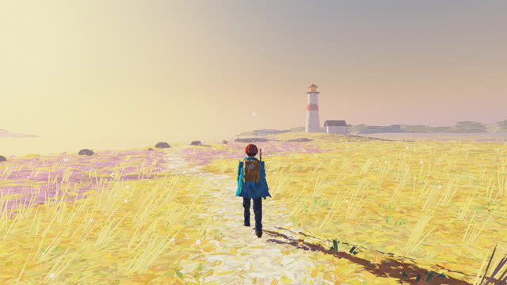
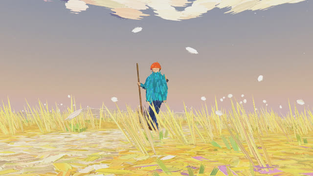
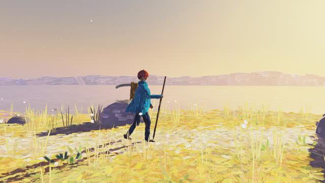
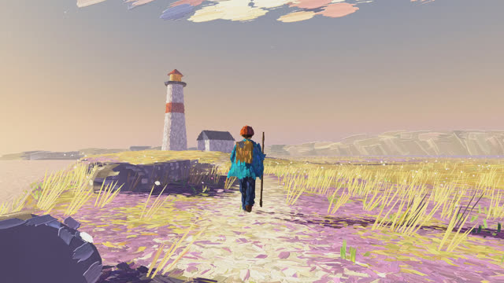
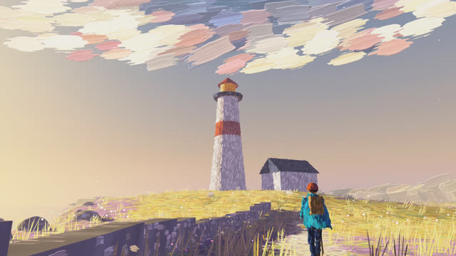
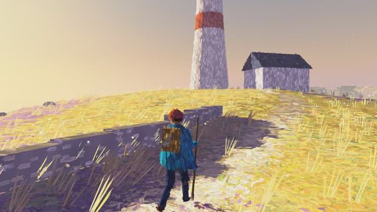

작업 흐름
- 입력
- 주제 하나(해 질 녘 바닷가 절벽과 등대, 봄 과수원, 비 오는 밤 시장, 할머니 댁 가는 길 …). 레퍼런스 그림 · 영상이 있으면 그 스틸
- 브리프
- 한 줄로 쓴 그림, 시간과 공기(해의 방향과 높이, 안개 색과 농도, 바람), 길과 땅, 세계를 이루는 것들과 각각의 세 가지 색, 걷는 사람(옷 · 모자 · 든 물건과 손), 샷 3–7개를 적은
BRIEF.md - 세계
- 하늘 · 먼 산 · 물 · 땅 · 풀과 꽃 · 나무 · 건물 같은 고체 · 흩날리는 것을 키트로 놓기. 새로운 것은 도형을 조합해 칠하거나 붓 자국을 직접 작성
- 인물
- 모델 · 클립 없이 코드로 만든 몸. 발은 길 위에 심고, 다리는 IK, 옷자락은 규칙으로 흔들림. 앞 · 옆 · 뒤 · 걷기 · 달리기 22포즈 캐스트 시트로 방향과 관절 확인
- 확인
- 샷마다 시작 · 중간 · 끝 시트, 맨 캔버스 없음 · 하얗게 날아감 · 움직임 · 결정성, 영상과 캐스트의 모든 포즈가 관절 범위 안인지 검사
- 출력
- 30fps 1920×1080 MP4(소리 없음), 영상 반복 재생 · W A S D 걷기 · 드래그 둘러보기 라이브 페이지
cd oil-paint-world/examples/lighthouse-path
node ../../scripts/check.mjs index.html
node ../../scripts/render.mjs index.html --cast --scale .5
node ../../scripts/render.mjs index.html --sheet --scale .5
node ../../scripts/render.mjs index.html --preview
node ../../scripts/render.mjs index.html
node ../../scripts/new-world.mjs ~/my-world요구 사항: Node + Playwright Chromium, ffmpeg. npm 설치 · API 키가 필요 없습니다. 영상은 GPU 없이 CPU WebGL로 렌더합니다(1080p 한 프레임 약 4–6초, 20초 예제를 워커 3개로 약 30분). 라이브 페이지는 GPU가 있어야 매끄럽게 움직입니다. 단계별 순서는 SKILL.md에 있습니다.
샘플
원본의 두 장면(가을 숲, 오로라 설원)에 없는 주제로 브리프부터 새로 설계해 만든 예제의 여섯 샷, 인물과 붓 자국 검토, 시작 템플릿입니다. 카드를 누르면 그 순간이 라이브 페이지에서 멈춘 채 열립니다.
「The Lighthouse Path」 20초 · 6샷 · 붓 자국 약 83만 개
해 질 녘 바닷가 절벽: 청록 아노락을 입은 사람이 마른 금빛 풀밭의 흰 길을 따라 걷다가, 길 끝의 등대를 향해 뛰어갑니다

샷 1 · 길뒤에서 따라가기누워 있는 땅 붓 자국, 길 가리개로 깐 백악 길, 인물 그림자 글레이즈

샷 2 · 풀숲낮은 삼각대발끝에 고정된 풀 붓 자국, 바람에 기우는 방향, 흩날리는 솜털

샷 3 · 절벽 가장자리옆에서 나란히하늘을 되비추는 물 붓 자국, 해 쪽 반짝임, 멀리서 가까이 순서로 깐 곶

샷 4 · 달리기초속 4.3 m달리기 보폭과 접지, 속도에 끌리는 옷자락, 관절 범위 검사 통과

샷 5 · 등대올려다보기원기둥 · 원뿔 · 상자 · 박공으로 지어 결 따라 칠한 고체, 돌담

샷 6 · 바다멈춰 서서 바라보기걸음을 늦춰 서기, 범위 안에서 돌리는 고개, 바람에 날리는 목도리
인물과 붓 자국 검토 캐스트 시트 · 확대
샷을 쓰기 전에 인물을 모든 방향과 걸음으로 보고, 스틸은 원래 크기로 확대해 붓 자국을 확인합니다
시작 템플릿 「Orchard Morning」 12초 · 3샷
봄 아침의 과수원. 새 세계는 이 페이지의 ①–⑧을 주제에 맞게 바꿔서 시작합니다
실제 작품
이 스킬을 만든 출처와, 이 레포에서 새 주제로 만든 예제입니다.
원본 · Blendi의 X 게시물「손으로 그린」 게임 16초 · 프레임마다 붓 자국 약 150만 개 · 브라우저에서 실시간x.com/BlendiByl/status/2120341251178594532
원본 프로젝트 · Oil paint가을 숲과 오로라 설원 두 장면 · 코드 MIT © 2026 Patch · 붓 렌더러를 여기서 가져와 고침patch.gg/blendi/oil-paint
「The Lighthouse Path」20초 · 6샷 · 라이브 페이지 · 걷기 모드oil-paint-world/examples/lighthouse-path
원본 레포 · motion-skills이 레포에서 만듦github.com/jungrok5/motion-skills
링크
- SKILL.md 워크플로
- 폴더 lib · scripts · templates · examples
- README.md 빠른 시작
- references/BRIEF.md 주제 → 브리프, 캐스트 시트 · 스틸 검토 기준
- references/LOOK.md 유화로 읽히게 하는 아홉 가지
- references/KIT.md 세계 설정, 키트의 모든 것과 옵션, 샷과 카메라
- references/PAINT.md 붓 자국 직접 쓰기, 프레임이 만들어지는 순서
- references/FIGURE.md 인물의 몸, 관절 범위, 캐스트 시트
- references/SOURCE.md 원본에서 가져온 것과 바꾼 것
- references/LESSONS.md 겪은 문제와 해결